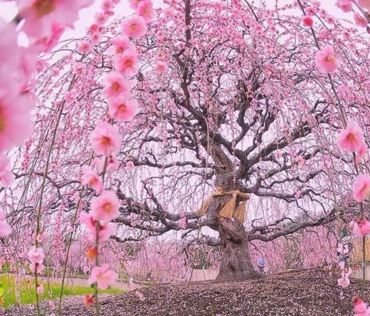
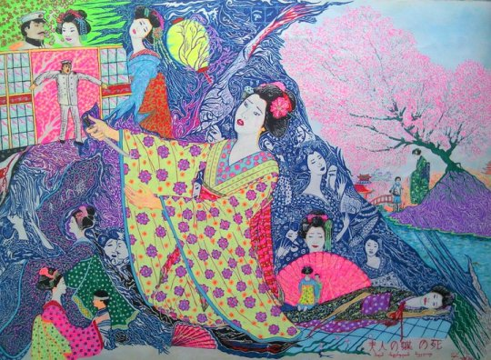

საკურას ფესტივალი
იაპონიაში ტურისტული ვიზიტისთვის საუკეთესო პერიოდად ითვლება იაპონური ალუბლის საკურას ყვავილობის სეზონი ანუ ჰ ა ნ ა მ ი, რაც იაპონურად „ყვავილით ტკბობას ნიშნავს“.
ამ პერიოდში იაპონიის დედაქალაქის თითქმის ყველა პარკი ვარდისფერ სივრცეში “იძირება”. ყვავილობის ტალღა გადაივლის მთელი ქვეყნის ტერიტორიას და მას კვალდაკვალ მიჰყვებიან იაპონელებიც და იქ ჩასული ამ საოცრების მნახველნი.ყვავილობის დაწყებად მიიჩნევა ალუბლის ტოტებზე სულ მინიმუმ 5 გაშლილი ყვავილი და მეტი კვირტი ...

ვარდისფერი ყვავილებით ტკბობის პერიოდი დაახლოებით ერთ კვირას გრძელდება….საკურას ყვავილობის ფესტივალი 27 მარტს აღინიშნება და ეს დღე იაპონიაში უკვე დღესასწაულამდეა აყვანილი. საკურას ფესტივალი ოფიციალურად II მსოფლიო ომის შემდეგ აღინიშნება და უკვე 400 წელზე მეტია იაპონელი ხალხი ზეიმობს ამ ულამაზესი ხის ყვავილობას…საკურას ნაყოფი (საკურანბო), დამარილებული ფოთლები და ყვავილები გამოიყენება საკვებ პროდუქტებში.
